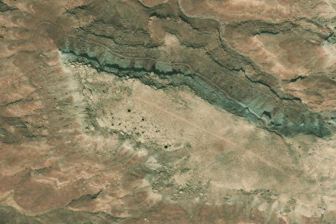

Poison Spring
POISONSPRING · UT

Aerial imagery source: Esri, Vantor, Earthstar Geographics, and the GIS User Community
| Identifier | POISONSPRING |
|---|---|
| State | UT |
| Runway length | 819 ft |
| Runway width | 20 ft |
| Surface | Dirt/Rock |
| Runway | 11/29 |
| Elevation | 4,721 ft |
| Ownership | blm |
| CTAF | 122.9 |
| Coordinates | 38.0978, -110.3869 |
Notes
[ubcp] Description: An extremely hazardous airstrip perched on a cliff ledge above the Dirty Devil River. This airstrip should be only attempted by a skilled pilot with a bush-type aircraft in optimal conditions. The wind normally favors blowing towards the cliff face which is great for landing but a serious problem for takeoff. Few places can offer a view like Poison Springs which makes it such a rewarding place to visit. Runway: Covered in shrubs and rock, this is a rough runway requiring high float tires. A large hill at the north end favors a downhill takeoff towards the cliff; however, the prevailing winds favor this direction and will prohibit a takeoff. Another hump greets you right at the bottom of the hill, so starting downhill and easing into the takeoff roll will help prevent a hard hit at the bottom. You must accomplish an immediate right turn after liftoff to clear the cliff face at the end of the runway. This turn will also remove the aircraft from ground affect as the terrain rapidly drops off flying away from the cliff face. I am unsure if a takeoff can be completed towards the hill as it rises probably more than most aircraft climb performance. Landing requires being able to control your aircraft at landing speeds comfortably in a bank near terrain and complete a precision landing. I normally land after the first hump which lies nearly at the threshold and then roll-out up the hill. You will not be able to see the runway above the hill and caution should be used as large bushes and rocks are located just off the runway. Approach Considerations: Multiple landing surveys and threat assessments should be made before landing. Be careful becoming fixated on the south end of the airstrip flying low and forgetting about the hill rapidly approaching. An early go around should be accomplished, a late go around will be nearly impossible. Find each hump and land according, planing a go around for any unfavorable condition such as wind, bounces, high or fast approach, etc. Parking: Not many places to park here as most of the area is covered in large shrub brush. Turning will probably have to be done manually as no turn around exists. No cell coverage. Camping could be done here, but any un-forecasted weather would leave you unable to take-off.